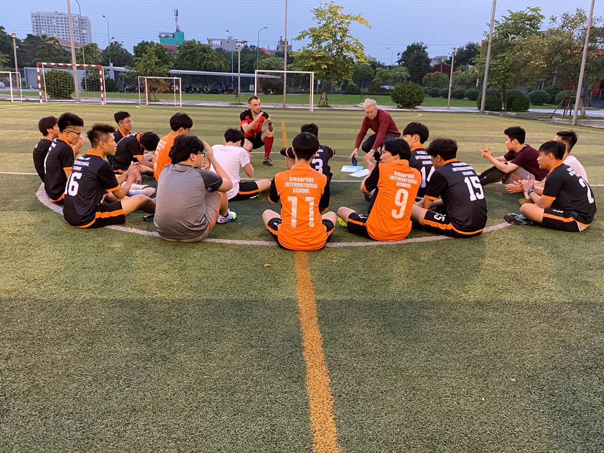
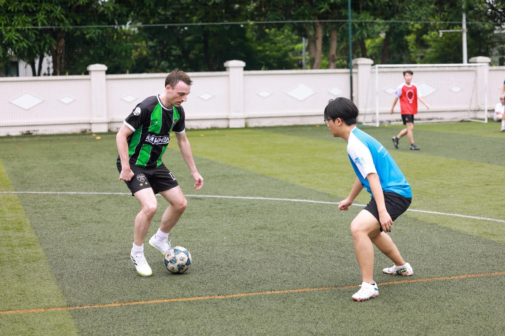
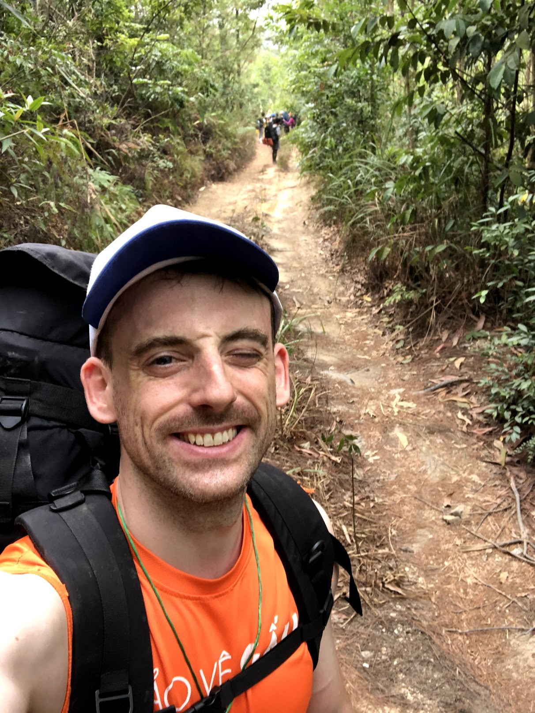

As an EdTech Coach and IBDP/IGCSE Computer Science Teacher at the British International School Hanoi, I'm passionate about making technology a powerful and intuitive tool for enhancing teaching effectiveness and enriching how students learn.
My journey through software development, digital humanities, and international education gives me a unique lens to bridge technical possibilities with practical pedagogical needs. My goal is to cultivate digital literacy, computational thinking, and innovative problem-solving in both students and my fellow educators.
Hello! I'm Patrick Flynn. My career is driven by a dual passion: leveraging technology effectively and fostering engaging learning experiences for students globally.
My international teaching journey began in 2013 after completing my CELTA in Hanoi. My initial years teaching English in local and bilingual schools solidified my commitment to education and provided valuable experience in diverse classroom settings.
Bridging Technology and Education
A lifelong tech enthusiast (programming, Raspberry Pis!), my passion led me to a First Class Honours Higher Diploma in Software Development. While industry experience as a developer/tester was valuable, my true calling emerged at the intersection of technology and pedagogy. To bridge these, I earned my UK QTS via Moreland University, transitioning to teach Computer Science internationally in 2019. Since then, I've focused on developing robust CS curricula (KS3-IBDP) and embracing school-wide EdTech leadership.
Personal Life & Values
Me and my family.
Family is incredibly important to me. My wife, originally from Vietnam and working as a Regional Systems Manager for the International Schools Partnership (ISP), shares my appreciation for technology and international education. We are proudly raising our two bilingual children, Aisling Chi (5) and Cian Son (2), navigating the joys and challenges of an international lifestyle.
I believe deeply in cultural immersion and adaptability; living abroad has given me the opportunity to become fluent in Vietnamese, enriching my experience and understanding.
Beyond the Classroom
Outside school and family, I'm passionate about staying active – often at the gym or cycling. Having coached JV and Varsity football teams at BIS Hanoi and holding GAA coaching certificates from Ireland, I enjoy contributing to extracurriculars. I also play guitar and bass guitar, frequently participating in student and teacher bands in every school I've been part of. Naturally, I'm a lifelong supporter of Newcastle United FC! A few years ago, walking the Camino de Santiago was an incredible test of perseverance and reflection.

Celebrating a championship win with the team.

Teachers vs. Students!

Hiking in Quang Ninh
My diverse background and commitment to continuous learning directly inform my collaborative and student-centred approach to EdTech leadership.
This blend of technical expertise, dedicated teaching practice, international experience, and personal values shapes my approach. I thrive on building relationships, fostering curiosity, and tackling new challenges – ready to contribute meaningfully to any school community.
Project Showcase
A selection of projects, initiatives, and resources I've developed or led. Click an item for more details.
EdTech Audit & Strategy
Needs Assessment, Planning
AI Policy & Resources
Policy Dev, Committee Chair
EdTech Pathways PD
PD Design, Coaching, Impact
Student Digital Planners
Outlook, Teams, Training
Staff Device Evaluation
Needs Analysis, Piloting
Whole-Staff CPD Delivery
Organisation, Facilitation
Maths IWB Rollout
Change Management, Training
Tech Tip Videos
Micro-Learning, CPD
New Staff Tech Onboarding
Training Design, Support
Student Tech Ambassadors
Mentoring, Peer Support
SIS Integration Rollout
Academic Lead, Testing
More details or specific examples available upon request.
Contact & Download CV
I'm always interested in discussing educational technology, computer science education, potential collaborations, or strategic technology leadership roles in international schools.
Please feel free to connect or download my Curriculum Vitae: